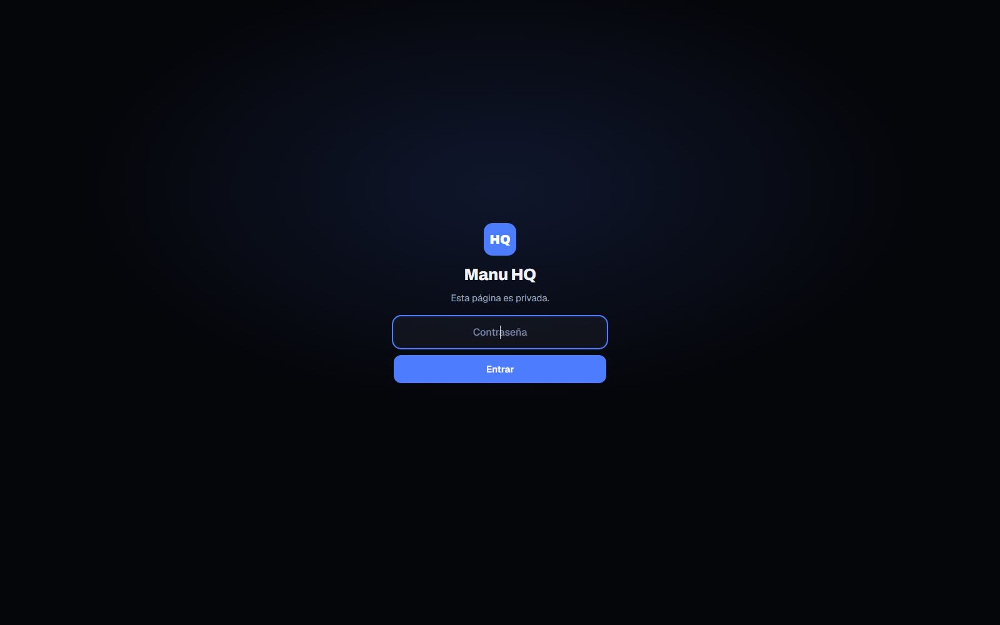

La agenda de Punta del Este. Marca, producto y negocio: calendario, mapa, planificador de viaje, en español, inglés y portugués, con páginas para Google que se generan solas.
eventospde.com ↗(Manuel Alzugaray — Portfolio 2026)
−73kgAtleta y coach. Construyo marcas, webs y video que se mueven.
(01) — Sobre mí
Me muevo en el tatami, en el agua y en la pantalla . Construyo marcas y productos con la misma disciplina con la que entreno: todos los días, sin atajos, hasta que funcionan.
Soy Manuel Alzugaray —Manu—, de Punta del Este. Crecí en una familia de atletas de alto rendimiento. Entreno judo, surfeo, soy entrenador de musculación desde 2024 y trabajo de guardavidas en verano. Diseño y programo webs desde 2023, armo marcas desde cero, creé contenido durante un año y edito video seguido.
Tengo dislexia: pienso en imágenes y en espacio, y se nota en cómo diseño. Bilingüe español–inglés (C2). Todo lo que ves acá lo hice yo: idea, diseño, código, textos y lanzamiento.
(02) — Trabajo seleccionado
La agenda de Punta del Este. Marca, producto y negocio: calendario, mapa, planificador de viaje, en español, inglés y portugués, con páginas para Google que se generan solas.
eventospde.com ↗
El sitio de una asociación de artes marciales con historia desde 1983. Noticias, galería, horarios y contacto, pensado para que el club publique solo, sin tocar código.
Ver sitio ↗
Una app instalable para el grupo de judo: las 100 técnicas del Kodokan con video, progreso por cinturón, asistencia a clase, el dojo en vivo y vocabulario japonés con audio.
Abrir app ↗
Mi plan para competir en −73 kg: gimnasio, días atléticos, flexibilidad, comida y objetivos. Hecho para leerse en el gimnasio, desde el celular, entre serie y serie.
Ver plan ↗
● Acceso privadoMi centro de mando: entrenamiento, judo, cambio físico, hábitos, lectura, proyectos de video y contenido, sincronizado entre dispositivos. Es privado, pero existe, y lo uso todos los días.
Con contraseña ↗(03) — Lo que hago
Construyo marcas desde cero: nombre, identidad, voz y el sistema para que crezcan. Eventos PDE empezó como una idea y hoy es una marca con su web, sus redes y su negocio.
Sitios y apps a medida, sin plantillas. Diseño, código, textos y lanzamiento. Rápidos, pensados para el celular y fáciles de actualizar.
Edito video seguido: ritmo, cortes, color, sonido y subtítulos. Piezas cortas para redes y videos para marcas y deportistas.
Creé contenido durante un año entero: idea, guion, grabación, edición y publicación. Sé lo que cuesta sostenerlo y cómo hacer que la gente se quede.
Fui coach de musculación y preparación física. Armo planes de fuerza, potencia y movilidad pensados para el deporte de cada uno, y los sigo semana a semana.
(04) — Trayectoria
Aprendí solo y empecé a hacer sitios para clientes y proyectos propios, definiendo con cada uno qué necesitaba de verdad.
Egresé del IB en noviembre. Español nativo, inglés C2: trabajo y escribo en los dos idiomas.
Planes de entrenamiento a medida con seguimiento del progreso. La clientela llegó sola: por recomendación y por redes.
Responsable de la seguridad de la piscina durante la temporada y de la atención diaria a residentes y visitantes.
Base técnica formal para lo que ya hacía por mi cuenta. Cursada sin finalizar: me llevé lo que necesitaba y seguí construyendo.
Lancé la agenda de Punta del Este en tres idiomas y sumé apps y sitios para el judo. En paralelo, curso de Administración.
Me mudo para estudiar y entrenar judo con más frecuencia, con el objetivo de entrar al circuito competitivo.
(05) — Experimentación gráfica
Estudios de interacción, tipografía y sistemas generativos, escritos en código y renderizados en tiempo real. Sin plantillas ni librerías gráficas.
Método
Años de planificar entrenamientos me dejaron un proceso: medir antes de actuar, avanzar por ciclos cortos y ajustar con datos. Lo aplico igual a una marca, una web o un video.
Entender el punto de partida: objetivo, público, competencia y lo que ya existe. Sin esto, todo lo demás es adivinar.
Entregable · brief y objetivosEstructura, mensajes y dirección visual definidos antes de diseñar. Un camino claro con etapas y fechas.
Entregable · mapa del sitio y referenciasDiseño y desarrollo en ciclos cortos, con versiones navegables desde la primera semana para decidir sobre algo real.
Entregable · prototipo en vivoLanzamiento, medición y ajustes. Que el cliente pueda actualizar solo, y que el proyecto siga rindiendo después.
Entregable · lanzamiento y métricasCapacidades
(07) — Contacto Disponible para proyectos · 2026